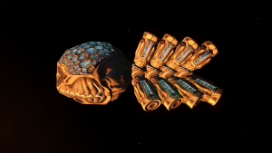
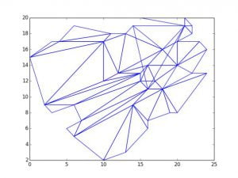
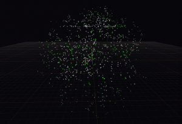
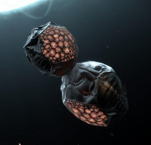
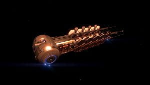
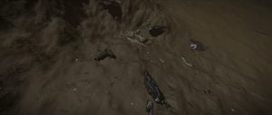
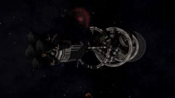
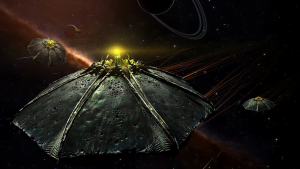
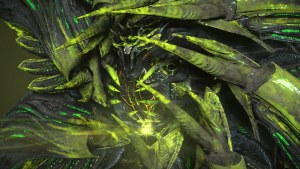
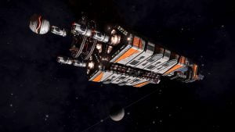

Lore
Our History
Canonn Timeline
Timeline of Events
Below is a brief history of the Unknown Artefact, Unknown Probe, Barnacle, Unknown Wreck, Unknown Ship, Unknown Site and Ancient Ruin mysteries – all of which were part of our search for the Thargoids – and all of which are intrinsically linked to the history of the Canonn.
If you are new to some of these mysteries, look out for the Learn More items that will take you to specific information to bring you up to speed.
3278 - London Treaty Signed
28 April 3301
Dr Arcanonn calls for information on some mysterious things he’d heard about in his travels including alien artefacts, Soontil Relics, and the locked Regor Sector (a sphere of systems some 200 Ly across about 1000 Ly from the Bubble). Immediately the existence of Unknown Artefacts (UAs) were mentioned and a rumor that they produced an interesting audio effect surfaced. The focus quickly narrowed to investigating these things. Before long the community started pledging a prize to the first Cmdr who could obtain a UA. Peregrina was suspected as possible source due to rumors of trade in alien artefacts so many pilots started searching there
29 April 3301
A vague and unconfirmed report of unknown artefacts being found in Timocani made by I and I Redeye resulted in that system also attracting attention. The Wings (1.2) trailer also provided a clue as it was noticed that the convoy was introduced as carrying a UA when interdicted in California Sector HW-W c1-7 en route to Leonard Nimoy Station in LHS 3006. And on 3 May 3301 TheSpaceTexan drops a cryptic clue that UAs can be found in convoys in strong signal sources, so someone must have found one before now.
The Unidentified Artefact Era
4 May 3301
Cmdr Wishblend reports the first confirmed sighting of a UA , in a Federal Navy convoy carrying a UA in 109 Virginis. She is unable to liberate the UA, but notes some interesting conversation between the ships, one of which is reporting minor glitches and problems with ship systems. It later came to light that similar conversation had been reported from a Tanmark System Defense convoy back in March [reported by elgraf on Reddit].

4 May 3301
An hour later Cmdr Red Wizzard recovered a UA from a Federal Navy convoy in Timocani. He attacked the convoy by himself in a Python, drew the Type-9 carrying the UA away from most of its escort, and was able to do enough damage to its cargo hatch that it eventually dropped the UA. Red Wizzard was able to scoop the UA and escape to supercruise despite taking heavy damage. He found that his ship’s systems were slowly damaged while carrying the UA, as if it were toxic. A group of Cmdrs met near Seega Port in Timocani to examine the UA (“The Listening”), where the full-on weirdness of the UA became apparent: the strange noises, the cloud of “fireflies”, and the visual distortion around the artefact. The Canonn makes an announcement on Galnet
4 May 3301
Less than two hours after that Cmdr Wishblend located another convoy and this time recovered the UA with the help of some wing-mates. This became a bit of a pattern for the next couple of months, nothing for several days and then a couple of sightings within a short space of time. Cmdrs become adept at dealing with the convoys and also experienced with handling the system degradation caused by carrying the UAs. The rarity of the UAs made research quite difficult though.
27 May 3301
Jmanis reported hearing Morse code in several of the audio recordings of UAs. His discovery was initially met was a fair bit of skepticism but he was eventually able to prove beyond reasonable doubt that the Morse corresponded to the name of the nearest celestial body. This phenomenon was earlier reported by warlock (10 May 3302; forum post) but it was discounted and he didn’t press the point.

After lengthy testing of the revelation, The Canonn makes an announcement on Galnet.
4 August 3301
Dr Arcanonn publicly announces the formation of the Canonn Interstellar Research Group. Varati is eventually chosen as the Canonn’s home system, making Thompson Dock the main base of operation.

15 August 3301
Boblit67 found a UA free-floating in space in HR 1185, a system near the Pleiades. These free-floating UAs were more common than those found in convoys: an individual Cmdr could expect find one after mere hours of searching rather than the days that were typically required to locate a convoy. Within a few weeks UAs had also been found in several other systems close to or in the Pleiades.
3 September 3301
Ratking15 reports that UAs floating in space now scan ships that approach within 1000m. Also thinks they are pointing in a consistent direction.

A couple of days later, Ratking15 investigates this pointing behaviour and confirms that his UA consistently aligns itself with Merope.
13 September 3301
A federal research programme is established to study the UAs, lead by Professor Ishmael Palin.
20 September 3301
Palin’s research programme is apparently shut down by federal authorities.
27 September 3301
Reaching out to Professor Palin by means of a Galnet article, Palin is invited to join the Canonn in order to continue his research. In short order, he declines.
27 September 3301
Silent Pact discovered free-floating UAs in Aries Dark Region GW-W d1-52, about 140 Ly from Merope. The UAs were much easier to find in this system than they had been in the systems closer to Merope (which no longer seem to contain UAs). It was now easy to find a UA within minutes of arriving in the right system and possible to gather multiple UAs per hour. Nearby systems were soon also found to contain UAs in abundance.
7 October 3301
Bouffant notices that the Morse code transmitted by the UAs has changed. The new signal appears to be groups of six semi-random letters.
10 October 3301
Mike Juliett Kilo works out that the new UA Morse signal is a crude drawing of the ship that made the recording using pairs of letters as coordinates and so the groups of six letters define triangles. Canonn makes an Galnet article.

16 October 3301
Reports from Warkushanui system of technical problems as starports in the region. Problems intensify and eventually result in starports shutting down all but core services. These technical issues also spread to other systems; this is the “technological plague” that is later found to be caused by large numbers of UAs being traded at the affected stations. The Canonn calls for a halt to UA sales via a Galnet article. (Much later it is realised that meta-alloys can be used to counter the effects).
22 October 3301
Construction of Obsidian Orbital, a new starport to be located in Maia, in the Pleiades Nebula begins.
19 October 3301
After gathering data on which systems UAs had been found in, Red Wizzard realised that they were all between 135 and 150 Ly of Merope. This became known as “the shell”. The Canonn makes an announcement on Galnet.

The Unknown Artefact - Learn More
Unidentified Artefacts can be found in systems that are between approximately 135 and 150 Ly of Merope.

This is a learning link – click the title to learn more.
26 October 3301
Palin announces that he will resume his research in Nganji system, independent of the Federation. A group of illegally armed intruders were later apprehended at the starport he was based as reported in this Galnet article.
The Barnacle Era
15 December 3301
Rumours appear of strange alien structures on the surface of planets. The Canonn and other pilots start searching in earnest for these structures. Rumours of a new type of material, meta-alloys, also appear. Many in the Canonn believe these two rumours to be connected.
21 December 3301
Palin calls for assistance in constructing a research facility on Maia B 1 b a (The Canonn comments on Galnet). His appeal is successful.
14 January 3302
Cmdrs Octo and Snax announce the discovery of alien structures on the surface of Merope 5 c (The Canonn makes an announcement on Galnet). These structures appear as a large vaguely conical structure resembling a Earth barnacle surrounded by a dozen or so spikes protruding from the ground. The central structure has a distinctive symbol on its side, the meaning of which has yet to be discovered. The spikes appear to have green pods or buds growing from them. Spikes can be destroyed leaving various minerals and metals, and the largest “ripe” pods are made of (or contain) meta-alloys.

Barnacles were soon found on a small number of other planets in systems in and around the Pleiades nebula. Pilots are quick to take advantage of these resources the barnacles produce and many shot. They appear to regenerate after some time.
15 Jan 3302
Obsidian Orbital’s technical team announce that meta-alloys appear to counter whatever was causing the “technological plague” malfunctions that the station had been suffering. Confirmation of the process is announced in March (Galnet article). This is later used by Palin to develop corrosion resistant cargo racks that are capable of protecting a ship from the UA’s self-repair mechanism (Galnet story. The Canonn supports the initiative on Galnet).
28 Jan 3302
Palin announces that the UAs have a self-repair mechanism that causes both the damage ships carrying them suffer, and the “technological plague” that has affected starports where large numbers of UAs have been sold. (This research is the result of Palin requesting meta-alloys: Galnet story).
7 February 3302
Palin announces his intention to leave for Maia B 1 b a to oversee the construction of his new research facility there. Two days later he is reported to have vanished somewhere between Obsidian Orbital and Maia B 1 b a. (Galnet story. The Canonn also comments on Galnet)
5 March 3302
Palin found in an escape pod recovered from the Blue Hand Gang in Orulas system. Palin and other rescued is found to be suffering from a strain of the Cerebus Plague (Galnet story), thanks to community assistance in sourcing Heke Ceremonial Tea he recovers completely and later describes the abduction (Galnet story).
10 March 3302
The Canonn launches a campaign for materials to construct a research outpost in Col 285 Sector IX-T d3-43. This campaign is successful and the Canonn Institute is built (Galnet story).

15 Apr 3302
Palin announces he is retiring from his research institute in favour of private research (Professor Cora Shaw assumes the directorship of the institute). The Canonn comments on Galnet)
5 May 3302
Jaques announces his plan to jump his station from Gliese 1269 to Beagle Point. Unfortunately the station fails to reach its destination, possibly due to technical issues from a large number of UAs sold there before departure, notably by Jmanis (Galnet story).
12 May 3302
Palin announces an open order for materials to build a new research outpost on Maia A 3 a. This is successful (Galnet story).
27 May 3302
Rumours appear of a new type of unusual object: the Unknown Probe (UP). Jmanis noticed the new commodity listed as illegal at stations.
5 June 3302
Cmdr Wobblytickle reports finding a barnacle on California Sector DL-Y d4 C 6, in the California nebula. This is the first barnacle found outside the Pleiades region. Canonn makes an announcement on Galnet)
15 June 3302
Midnight Ninja reports finding a pair of barnacles on Witch Head Sector GW-W c1-4 A 4, in the Witch Head nebula. This is the third nebula barnacles are known to be found in.
16 June 3302
A Federal capital ship is spotted by Cmdr CriosX above the surface of Merope 2 a. It is stationed above a barnacle that was not previously known to the scientific community. Additional battlecruisers soon appear above other barnacle sites in the Pleiades, ostensibly to protect them. However convoys carrying meta-alloys are seen in the same systems so many believe the feds are harvesting the barnacles themselves. (Galnet article)

The Unknown Probe Era
24 Jun 3302
Cmdr RiZ@L spotted a heavily defended convoy carrying an Unknown Probe in system Ross 47.
25 June 3302
Cmdr Monkey D Luffy and a number of other Canonn pilots recover a UP from a convoy in Ross 47. It’s immediately obvious that UPs are related to UAs: they look like a pair of the UA’s bulbous end stuck together back-to-back (one slightly smaller than the other). UPs are found to corrode ships in the same way that UAs do (self-repair mechanism), and Palin’s corrosion resistant cargo racks do provide protection. They also emit a similar cloud of “fireflies” and visual distortion. Notable difference include that the UP does not scan ships and doesn’t appear to transmit Morse code. Canonn makes an announcement on Galnet.

29 June 3302
Cmdr Cly locates Jaques Station in Eol Prou RS-T d3-94. It is still suffering the effects of the “technological plague” so an appeal for meta-alloys is launched. As its new home is near a nebula pilots also starting searching for barnacles nearby (Galnet story).
18 July 3302
Cmdr RiZ@L discovers that when UPs are scanned using a discovery scanner they respond with some sort EMP that appears to reboot the ship’s control system. The EMP is accompanied by a brief burst of sound reminiscent of the sounds produced by UAs. AshyRaccoon immediately noticed that the sound burst contained an image encoded into the frequency spectrogram of the audio. It is uncertain what the image represents though some believe it is a key or description of the data transmitted by the UP back to Merope 5 c.

18 August 3302
Cmdr ilo found the first free-floating UP near Pleiades Sector KC-U b3-1 8, an ammonia world. It is quickly discovered that UP ‘floaters can also be found around other ammonia worlds within about 100 Ly of Merope.
18 August 3302
Frontier forum post, Galnet story
Canonn researchers discover that UPs in space near planets transmit tight-beam signals at Merope 5 c. Muetdhiver soon decrypts the signal (forum post, another forum post, complete summary), which contains binary coded octal values, and finds that it contains the radius, surface temperature, gravity, and atmospheric composition of planet they are near. Further work by Cmdr Wace found the data also contains distance information and was able to pinpoint the origin of the probe’s measurement system as Col 70 Sector FY-N c21-3 (forum post, Galnet story, the details).
The Unknown Probe - Learn More
Unknown Probes are objects that are believed to be related to the Unknown Artefacts, as they are not only similar in design, but possess the same corrosive qualities as the Artefacts.

This is a learning link – click the title to learn more.
28 August 3302
Interference in promotional video transmissions is found to contain an encoded message which signals the start of a “little game” on 28 August which it promises will lead to “something incredible … that the whole galaxy will want to see”. This turned out to be a treasure hunt of sorts organised by Otto Granger and his gang in order to generate some credits for them from their discovery of an “alien wreck”. The hunt involved various encrypted clues and the delivery of certain commodities for each of three gang members.
A good summary of the event can be found in this Reddit post.
The Hunt - Learn More
This mystery began with distortions and interruptions to video transmissions by CMDR Braben in August 3302. The interruption provided an image of a crashed ship of unknown design, while the distortions contained binary numbers.

This is a learning link – click the title to learn more.
30 August 3302
Forum post, Reddit post, Galnet story
Canonn Cmdrs Noctrach, BALALAIKAX3 and Ihazevich announce they have located the alien wreck on Pleiades Sector AB-W b2-4 9 a. An Imperial capital ship is soon deployed over the wreck (Galnet story).

Listening Posts - Learn More
Listening Posts have been largely found in systems on the frontier of the bubble. Their origin is not known for sure, but it is possible that they are deployed by the Sirius Corporation.

This is a learning link – click the title to learn more.
The Ancient Ruins Era
27 October 3302
Cmdr xDeath/Basch Fon Ronsenburg located an apparently ancient and possibly alien ruin on the surface of Synuefe XR-H d11-102 1 b. Several different objects of interest were found at the site, some recoverable (described as ancient relics, tablets, totems, orbs, urns, and caskets in commodities markets), others included still active technological devices such as obelisks that transmit data packages when scanned.

29 October 3302
The first discovery of non-sentient life was made by Cmdr Alesia on Colonia 3 C A. Tall Spires covered with various types of fungal growths resembling those found on Earth and other planets, apparently thriving on the volcanic warmth and minerals around the Silicate Vapour Geysers.

2 November 3302
Cmdr Denneb discovered a second alien wreck, on HIP 17862 6 c a. There were several UAs and “Unknown Fragments” scattered about the site.
Sol/Achenar/Gateway Numbers Beacon Mystery - Learn More
Unregistered Comms Beacons were found in orbit around these core worlds: Sol – Europa; Achenar – Capitol; and Gateway 2. These provided a mystery leading to San Tu Scientific Installation, and ultimately to another crashed Unknown Ship on HIP 17403.

This is a learning link – click the title to learn more.
5 November 3302
The third alien crash site, in HIP 17403 was discovered on body A 4 A -34.96 / -141.37, following the Numbers Beacon mystery. This is the largest alien crash site, including a number of human origin ships leading to conjecture that they may have been brought down in a struggle with the alien ship. Cmdr Shabooka was first on the scene.

Unregistered Comms Beacons - Learn More
Unregistered Comms Beacons have been found in systems within the bubble, and in deep space. Their origin is not known for sure, but it is possible that they are deployed by the Sirius Corporation.
This is a learning link – click the title to learn more.
December 3302
Colonia Expansion Initiative commences, with Canonn pilots transporting vital Galactic Guides by the shipful out to Jacques in his new environment in a bid to establish a foothold in the “new bubble” of civilisation developing there.
5 January 3303
Cmdr DP Sayre was interdicted while en route to the Aries Dark Region XU-O b6-3 by a highly unusual ship bearing no resemblance to any known human craft. As the Commander’s ship was plucked from hyperspace by this Unknown Ship, all their systems were completely disabled. The mysterious craft subjected the pilot’s vessel to some kind of scan before departing, at which point the hapless Commander’s ship returned to life.

February/March 3303
Commanders from Canonn and elsewhere busied themselves with the involved but lucrative Ram Tah mission to decode the Ancient Ruins. It was from this imission that what later became Canonn R&D was born after like minded commanders grouped together to develop tools to both document the sites and help others complete this mission.

Ancient Guardian Ruins - Learn More
The Ancient Ruins and their creators – the Guardians – provide rich and detailed archaeological interest,. Cmdr Mykl Atrum provides a summary of information and links to further detail.

This is a learning link – click the title to learn more.
23 April 3303
CMDRs Lexic Maise and EfilOne found the first Generation Ship “Lycaon” in the Alaunus system. This Reddit post contains details of the find.
Generation Ships - Learn More
The Generation Ships of “The Missing” provide truly atmospheric locations to visit. Canonn’s Cmdr Scott details them all.

This is a learning link – click the title to learn more.
29 April 3303
Commander Newzim discovered a distress beacon (threat 0) in Maia containing an assortment of ships damaged by as yet unknown assailants. He reported sighting of an Unknown Ship leaving the area soon after dropping in on the beacon.

14 May 3303
With a massive show of support from the community at large and Canonn members, a project to build and commission the first player group megaship – Asimov class science vessel Gnosis – was completed in record time. The project was expected to take a week and had 2 extra orders laid on top beyond the initial 8 stages, but still was completed in under 3 days with an estimated 35 million tonnes of goods delivered by over 9,400 commanders.

Canonn decals were also made available for everyone that took part in the CG, as well as those who did not take part but later become allied with the Canonn faction. Canonn Faction News also reported on this momentous event.
3 June 3303
Unknown Ships are observed apparently harvesting Barnacles at Pleiades Sector OI-T C3-7 A 6 -42.7785 -21.7142. Galnet article

13th June 3303 - The Return
Following the short-running Professor Palin CG to gather Unknown Wake Data leading to the discovery of an apparent battle between Unknown Ships and Federation assets at HIP 17044, a global message was received from Cmdr Edward Lewis, as follows:
This is an urgent message from Commander Edward Lewis.
There are forces out there that don’t want you to know the truth, but I have to make this public.
I found a ship in HIP 17044. A Federal cap ship, shot to pieces. They were carrying the data the Feds stole from Professor Palin. The crew is dead, but they discovered something important about the Unknown Ships.
There’s beacon in the wreckage broadcasting a message, over and over.
It proves what we suspected. They’re back. And the whole galaxy needs to know. The Thargoids have returned.

Captain Skoomer captured the atmosphere of the wreckage site perfectly:
23 June 3303
Cmdr Synjorai discovered Professor Melville’s megaship named Cete in Col 173 Sector LJ-F C12-0 around Planet A 3. The ship logs tell a strange tale of suspicion, madness and attempted mutiny during their search for the Guardians. Following the megaship discovery a number of Guardian Ruins were found in the system.

Original Galnet, Frontier Forum Post
27 June 3303
Following new signal posts in the Pleiades, a number of independent commanders located the first of the Unknown Structures – which many refer to as Thargoid bases or crashed Thargoid mother-ships. Galnet Article. Within short an increasing number were found – each intact at varying levels – by using the Unknown Link found within the structure’s tunnels.

27 June 3303
Placing objects – an Unknown Artefact, an Unknown Probe and an Unknown Link – into the Unknown Device at the core of an active site causes a star map to display. It has also been observed that placing Guardian relics into the device instead cause violent reactions that emanate damage in waves. Quite the lightshow either way!

Decoding the Unknown Link - Learn More
The Unknown Link expresses audio information that with the right method can be translated into a distance value from the current site – this allows commanders to pinpoint potential systems containing additional Unknown Sites. The method involves playing Unknown Device recordings to the UL, transcribing audio, converting octal and analysing potential systems. Canonn commanders worked the method out through trial and error, and have written a handy guide.

This is a learning link – click the title to learn more.
5 July 3303
By 5th July, Canonn scientists working with indepentant commanders and using the Unknown Link location method had managed to discover 208 Unknown Sites – including a permit locked system HIP 22460. All sites found so far sit within the UA Sphere (less than 150ly from Merope).

20 July 3303
Professor Palin begins asking for biological materials from the Unknown Sites to further his research and the pilots were well rewarded for their efforts.

4 August 3303
The Federation, Empire, and the Alliance announce a joint operation forming the organisation called AEGIS with the intention of countering the attacks by the Thargoids. They started with building more research bases in the Pleiades area, the first three of which were constructed within the following weeks.

17 August 3303
The Alliance launches a campaign for commanders to bring unknown ship and site materials to Neville Horizons in an attempt bolster their research into the Thargoids, at the same time drawing criticism from the other galactic powers.

8 September 3303
Federal Blockade of Professor Palin’s personal research center on Maia A 3 A comes to an end with the Federation battleship leaving suddenly and unannounced.

21 September 3303
The first of many appeals by AEGIS for materials for the creation of sensors and weapons to study and combat the Thargoid threat.

24 September 3303
Thargoid attacks begin to become more prominent; commanders are now being hyperdicted by Thargoids en mass. Thargoid vessels can now be scanned with the AX Xeno Scanner created by Proffessor Palin showing up as a Cyclops variant.

26 September 3303
Thargoid scout from the old war found crashed on HIP 17125 A 3 A.

27 September 3303
The first megabarnacle site (or barnacle forest) is found on Hyades Sector AQ-Y D81 C 2. Thargoid vessels are showing the same emblem as the barnacles, further tying the two together.

28 September 3303
The Canonn Megaship Gnosis makes its first jump to Hyades Sector AQ-Y d81. On the day after, it got a shiny new Canonn orange paint job.

1 October 3303
Megaship wreckages begin to be found throughout the Pleiades area and the number of Thargoid attacks start increasing.

7 October 3303
The Federation officially recalls its naval vessels from the Pleiades. Within a week, the Empire also announces that it is pulling its naval vessels out of the area, leaving AEGIS on the front line. Their pullout follows a number of attacks by Thargoids on their forces.

9 October 3303
First of many INRA bases is found on Hermitage 4 A, leading to many others. Within about a month, seven other INRA bases had been located, and the information taken from the logs gave insight into the operations of INRA during the previous war with Thargoids. Rumours of Thargoid motherships were confirmed by these logs, as well as the development and use of the Mycoid virus as a weapon against them in the old war.

20 October 3303
New Guardian Ruins were found in areas near to galaxy core, Prai Hypoo and Eorl Auwsy.

21 October 3303
Aegis announces their intention to build 20 more bases in the Pleiades area

13 November 3303
Second known variant of Thargoid vessel called the Basilisk variant is first spotted in the Electra system in the Pleiades. They are believed to be much older than the cyclops variants first encountered, and show scars from battle.

16 November 3303
The Gnosis arrives in orbit around Merope 5 C, taking a nostalgic look at one of the most scrutinised and explored planets by the commanders of Canonn.

25 November 3303
John Jameson’s Cobra MkIII is found on HIP 12099 1 B, having been sabotaged by INRA long ago. Jameson’s final log recordings tell how he delivered the Mycoid Virus to the Thargoids in an act of what he called mass murder.

9 December 3303
The war in Khun ends with a clear victory by Canonn’s defense forces, leaving control of the system under Canonn’s oversight. Elvira Martuuk’s Long Sight base is located on the 5th planet in Khun, making Canonn the first commander controlled group to take control of a system with an engineer.

12 December 3303
Three stations in the Pleiades area, The Oracle, Liman Legacy, and Titan’s Daughter, are savagely attacked by Thargoids. Thousands of casualties occur in these attacks, resulting in a huge rescue operation by commanders to remove survivors from the stations and bring them to safety. At the same time, a new class of Thargoid Interceptor is encountered called the Medusa variant.

7 January 3304
A second crashed scout was found on Pleiades Sector LN-T c3-4 2 a by CMDR Sileo. Scanning the scout reveals the presence of the mycoid agent, similarly to the previously found specimen. Read more

Discovery credit: Sileo. Photo credit: Factabulous
11 January 3304
Obsidian Orbital in Maia, along with Reed’s Rest in Merope come under attack by Thargoids, bringing the total number of attacked stations to eleven. A trend in the attacks is further verified – all of the Thargoid attacks on stations thus far have been sites which hosted AEGIS research labs.

30 January 3304
Dove Enigma, a megaship in the Colonia area, shut down services as a result of a Thargoid Sensor bombing campaign by terrorists. Having been named after a commander with a terminal illness, as well as the expedition to lead him to the megaship, an uproar in the galactic community occurred. Commanders from Canonn and many other entities gathered as many meta alloys as they could and transported them many thousands of light years to the station, bringing it back online just in time for CMDR DoveEnigma13 and the expedition’s arrival.

15 February 3304
Gaimon Dock in 49 Arietis and Weyn Dock in 64 Arietis are attacked by Thargoids, leaving only four known AEGIS research labs left. This marks the first time that Thargoid vessels are seen en mass beyond the Pleiades shell.

27 February 3304
Ram Tah announces a new search for Guardian sites and data, resulting in the discovery of many new Guardian structures. Many Commanders from Canonn and beyond answer the call. At the same time, new Thargoid vessels are sighted in the Pleiades area, the Marauder class Scouts. They appear to be smaller versions of the old Thargoid scout ships, and are extremely aggressive.

3 March 3304
As new data pours in from the newly found Guardian structures, light is shed on the relations between the Thargoids and Guardians. They were indeed at war, with the Guardians eventually gaining the upper hand. Along with the new data gleaned from the sites, Guardian technologies are discovered and used to recreate the powerful weapons which they used to fight the Thargoids millions of years ago.

8 March 3304
New AEGIS research installations are found, named the Eagle Eye 1-6. Canonn and other commanders flock to these stations to decode their comms beacon transmissions, learning that AEGIS has created some kind of Thargoid detection capabilities, but were initially unsure what AEGIS had discovered.

Eagle Eye Installations - Learn More
Various CMDRs identified that the signal broadcast by the Eagle Eye UCBs is encrypted with a keyed caesar cipher using the key THARGOIDS (due to be changed to INVADERS later on). The decoded messages point to known Thargoid Structures that can be activated to get two or, occasionally, three new messages from the Thargoid Device. Once properly decoded and trilaterated, the messages point to systems of interest for the Thargoids that can include: attackable stations, barnacles, POIs such as INRA Bases, etc

This is a learning link – click the title to learn more.
19 April 3304
Canonn publicly announces the creation of the Lab 69 Xeno Intelligence Agency (XIA) to provide support and intelligence to the Anti Xeno Initiative. Reactions to the announcement were mixed, with some commanders viewing this as going against Canonn’s neutral position, but the decision to support a human reaction was seen as essential in front of the ever-growing Thargoid threat. Read More

31 May 3304
Eagle Eye #2 points at a planet where no known Thargoid Structure is present. Subsequent searches lead to the discovery of a previously unknown TSS (TS228) by CMDR Jonuss. Messages returned by the device of the structure point at recent Thargoid targets so it is not possible to determine links towards other structures

Discovery credit: CMDR Jonuss, Photo credit: Redden Alt-Mer
28 June 3304
Three new types of Thargoid Scouts are identified: Inciters, Berserkers, and Regenerators. According to the first reports, it seems that such scouts offer support to other nearby Thargoid vessels such as increasing their regeneration rate. Read More

29 June 3304
An unprecedented number of listening posts are found, leading to the discoveries of nine planetary settlements that recently suffered a Thargoid attack. Most of the settlements logs share a common theme: Thargoid attacking due to the presence of Thargoid artifacts or important human resources (e.g., research labs). Of particular relevance, Site 94 logs make mention of the discovery of an underground structure that could remind of Thargoid Structures. Unfortunately, a search for such structure didn’t lead to any finding. Read More about Site 94

Discovery Credits: Annabella Terra, Bagofholding, DaftMav, Kaz Archer, Namix and Node_ – and most likely others
13 August 3304
Canonn council announces plans to use the Gnosis to enter the Cone Sector: a sector not directly blocked by permit locks but made inaccessible by a curtain of other permit locked systems around it. Canonn researchers identified a place where the curtain is thin enough to allow the Gnosis to bypass it, jumping directly from the Outotz sector to system Cone Sector FN-J B9-0.

Photo Credit: CMDR Dutch Foster
28 August 3304
After Ram Tah announced he identified previously unknown signals in Guardians space, CMDR Valamore quickly finds one of the sources: a huge space-borne structure of clear Guardian origin. Such structures are called “Beacons” and, once properly activated by providing energy through energy weapons, they release an Ancient Key that can be collected. Furthermore, upon activation, the beacon sends a message containing the location of a nearby Guardian Structure. Such structures differ from previously discovered ones in that they’re bigger and can be activated with an Ancient Key (rather than a relic) to obtain a Vessel Blueprint. Read more

Photo Credit: CMDR Factabulous
29 August 3304
With just one week to go before the Gnosis jump inside the Cone Sector, a new Thargoid interceptor variant is discovered. Codenamed Hydra by the Pilots Federation, it’s the most dangerous interceptor observed so far, with 8 hearts and a swarm of 128 Thargons. The Cone Sector allegedly contains a huge number of Hydra Interceptors and, for this reason, the Pilots Federation decides to put the whole area under a permit lock.

Photo Credit: CMDR Node_
30 August 3304
While analyzing the weekly Eagle Eye update, our scientists discover that one of the identified Thargoids targets is the Gnosis herself. This does not discourage the Council, and plans for the jump inside the Cone sector continue.

Photo Credit: CMDR Scott
30 August 3304
Eagle Eye installation #1 and #4 led to the discovery of two separate installations in system Etain, respectively on bodies 4 a and 4 c. Logs retrieved at the installations reveal the end of the last Far God cultists, that placed themselves in suspended animation while waiting for the arrival of the heralds of the Far Gods, i.e. the Thargoids. Of particular relevance among the logs are those of Agent Nathan Summers that seems to have remained trapped during his undercover investigations on the cult. It is unclear whether the religious fanatics are still somewhere in the outposts, or have been captured by the Thargoids.

Photo Credit: CMDR Factabulous
06 September 3304
Despite numerous warnings – and a last minute attempt at permit-locking the area – by the Pilots Federation, Canonn council decides to keep the Gnosis on her plotted route towards the Cone Sector. While attempting the last jump, however, the Gnosis gets hyperdicted suffering heavy damages and remains stranded in a nearby system, with its FSD drive offline. Storms of brave pilots successfully repel the Thargoid attack after days of continuous fighting.

Photo Credit: CMDR SoulStah318
20 September 3304
Three weeks after the attack, the FSD drives of the Gnosis and all other facilities are fully repaired.

Photo Credit: CMDR Starbeaver
29 November 3304
AEGIS announces a breakthrough in their study of Meta Alloys that resulted in a cure for the infamous problem of “Thargoid Sensor Bombing” that left many starports crippled for weeks in the past.
Photo Credit: CMDR Dr. Strange
20 December 3304
After many months of operation, Eagle Eye installation finally refine their signals decoding capabilities and are now able to decode the Thargoid targets directly, without requiring humans to activate Thargoid Structures and decode the signals manually. The output of Eagle Eye UCBs is still encrypted with the same algorithm and key.
Photo Credit: CMDR Scott
21 February 3305
A third crashed Thargoid scout is found in system Arietis Sector ZE-A d75, Planet 10 A.

Photo Credit: CMDR Factabulous, Discovery Credit: CMDR Darkjayson
4 March 3305
CMDR Heisenberg6626 publishes an in-depth study of how velocity in supercruise is affected by bodies and what are the best trajectories to maintain to optimize flight paths. “In this article we investigate the ship dynamics in supercruise within star systems. We identify the maximal velocity, which is the speed a ship attempts to reach when set to maximal throttle. We measure this velocity, and find that it depends on how far one is away from the nearest star. Thus, one can use geodesic equations to compute the optimal flight path. We simulate some trajectories, and finally give some guidelines as to how to move optimally in a star system.”

Credit: CMDR Heisenberg6626
19 March 3305
“This research paper by CMDRs Redden Alt-Mer and Factabulous looks at the thorny issue of how the Thargoids are selecting their targets for attack. In 3305 this has been more difficult as there is greater diversity in the selected systems, and has broken assumptions made in earlier times. The paper puts forward the theory that the Eagle Eye targets that are selected by the Thargoids are based on per-Eagle Eye criteria – so we can find spacial and compositional commonality between targets for Eagle Eye 4 (Ammonia) that differ from Eagle Eye 6 (Agriculture), but are maintained over time within the targets of a particular Eagle Eye transmitter.”

Credit: CMDRs Redden Alt Mer and Factabulous